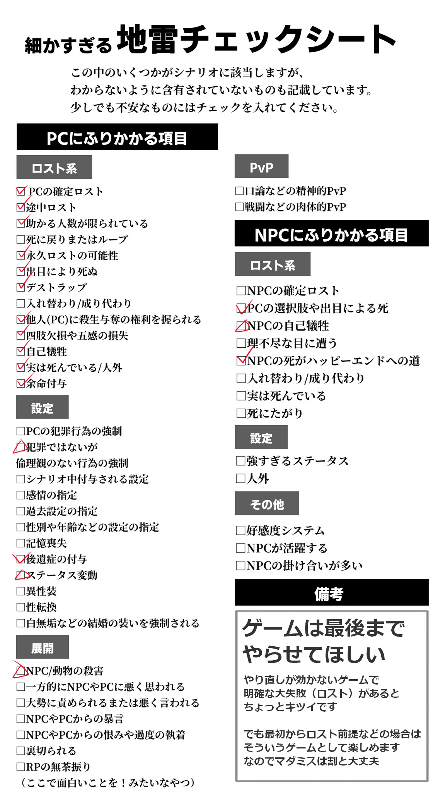
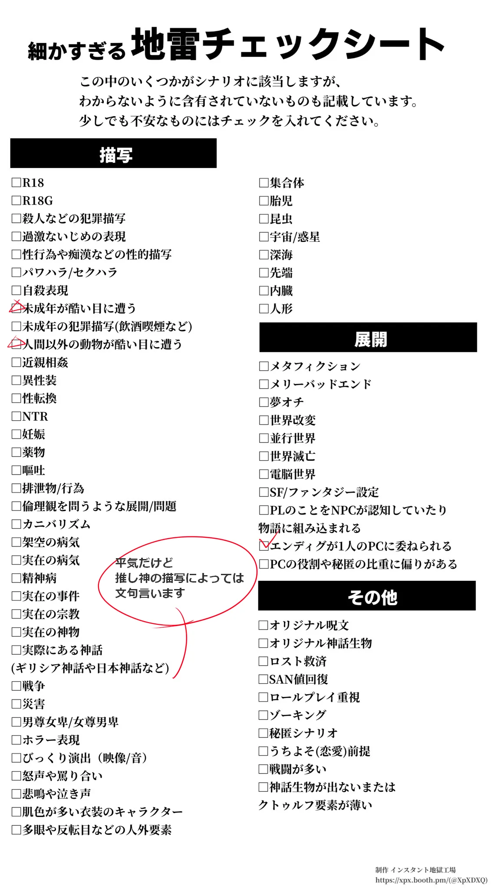

はじめに
このサイトはTRPGのPC一覧や、マダミスで通過したシナリオのPCイメージ画像などを掲載しています。
イラストやサイト構成にAIを利用しています。苦手な方はご注意ください。
マダミス通過PCイメージはネタバレ防止のため、一部の画像はシルエットにしています。
About / Profile
基本情報
成人済み。3L女攻め好き。AI平気なタイプです
マダミス初心者。超のつく優柔不断
ギリギリにならないと予定がわからないことちょっと多め
マダミスはじめました
RPとファンタジー系のシナリオが好きです。
まだ自分の好きと苦手の傾向がちゃんとつかめていないので色々経験したいです
所持ルールブック
ソード・ワールド2.5 I～III
地雷シート
ロスト系にチェックが多いですが、TRPG系では肌に合わないことが多いだけでマダミスでは割と大丈夫です
一回しかできないゲームで後に引く致命的な大失敗をしたり愛着のあるキャラを失ったり
最後までちゃんとゲームを楽しめないのが心にくるだけなので
最初から死ぬことが前提とわかっていればそういうものなんだとなります


シートはこちらをお借りしました
≫ 配布元（BOOTH）はこちら
AI代行依頼について
AIフル活用でよければ製作のお手伝いをします
（シナリオに使うイラストの生成など）
よければ依頼料代わりに未通過のシナリオを回したりリザーバーに呼んでください
うっふ～ん❤ 寿司とかおごってくれてもいいのよ～ん❤